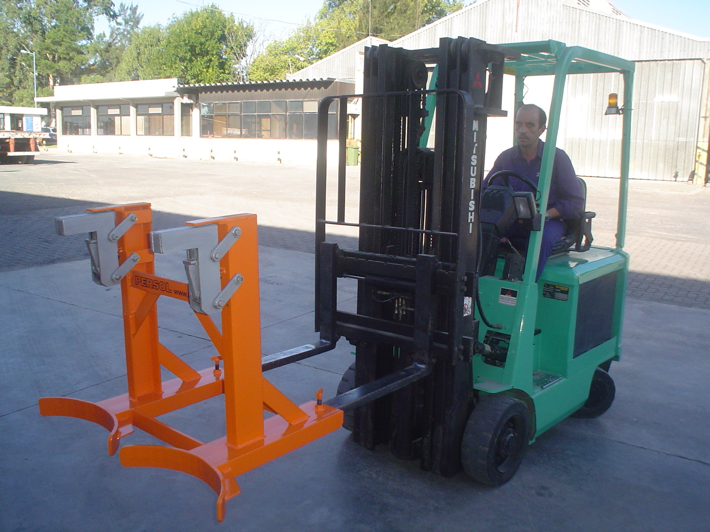
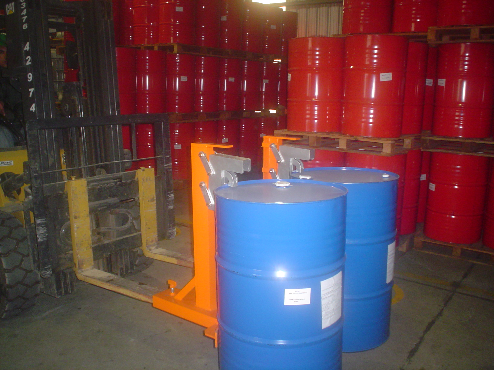
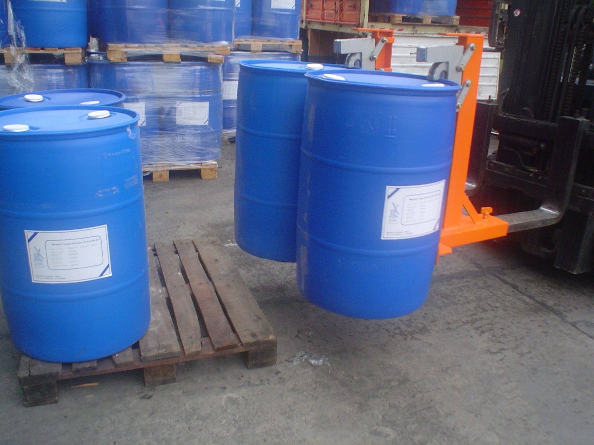
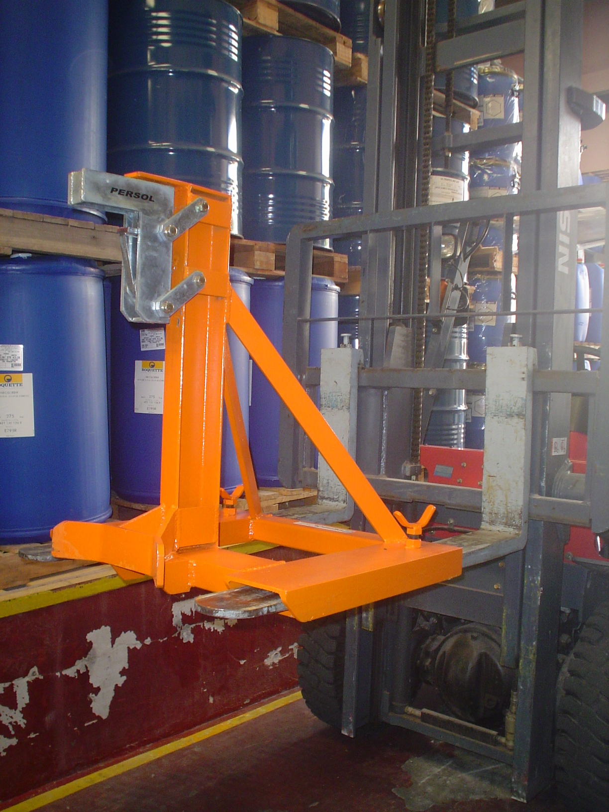

GRAMPA PARROT








Nuestro modelo de GRAMPA PARROT PRSL Persol ® tiene decenas de unidades presentes en operaciones logísticas. Comenzó siendo un implemento compatible con la Rampa Móvil, para descarga de tambores importados, o para carga de exportación de miel, y fue ganando usos y aplicaciones en varios modelos de recipientes, incluso plásticos.
Con resortes fabricados a medida de los desplazamientos y esfuerzos del muy robusto cabezal, se presenta en versiones SIMPLE y DOBLE.